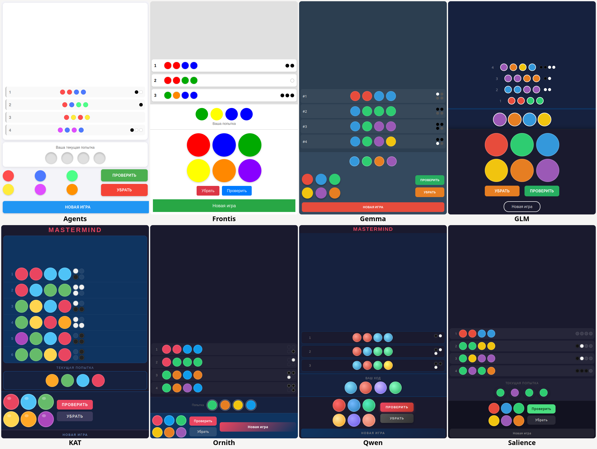
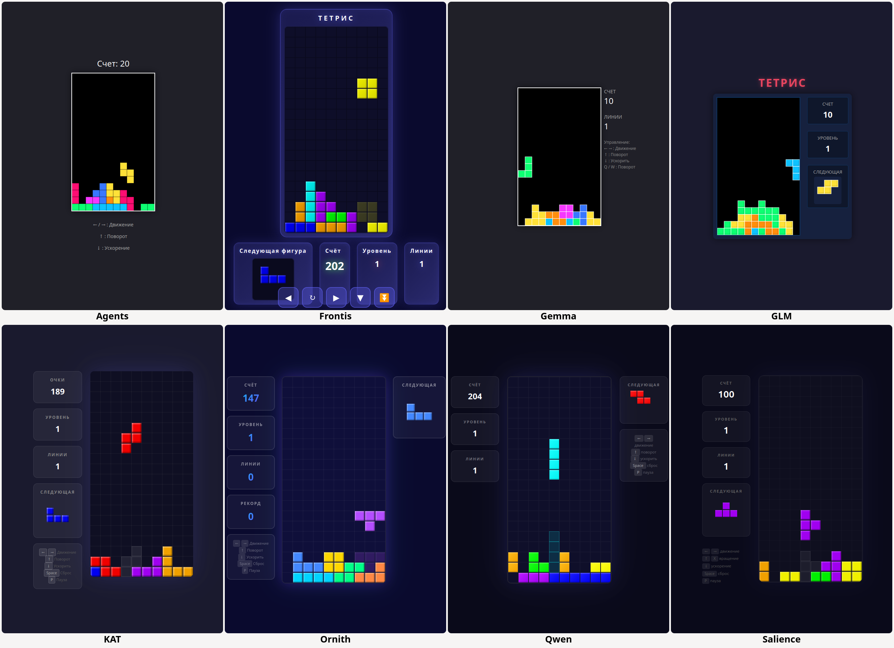
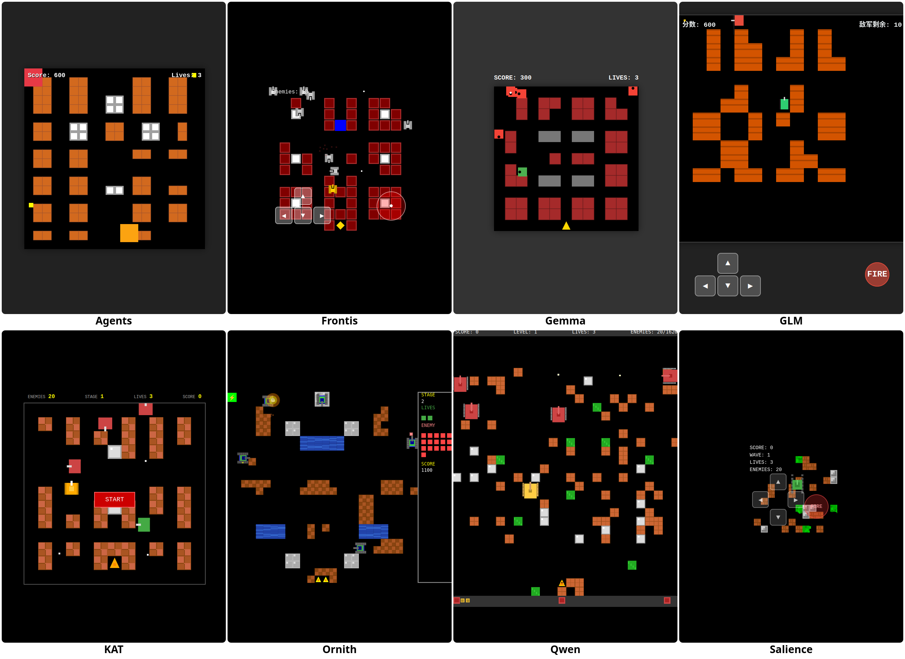

Сначала я просил все тестируемые LLM сгенерировать игру Mastermind по такому запросу: "Нужно разработать игру mastermind на html, css и js с простым адаптивным дизайном для удобного игрового процесса на мобильном устройстве.
Задача игрока угадать последовательность из 4 цветов (цвета могут повторяться в последовательности).
Игра визуально состоит из блоков:
1. игровое поле, где хранится история попыток с отображением результата
2. ниже блок с текущей попыткой
3. в самом низу панель управления.
Сверху игровое поле, под ним блок с текщей попыткой и в самом низу панель управления (в нижней части экрана).
Панель управления состоит из блока с 6 разноцветными кругами (конфигурация 3+3 в две строки) и справа от блока с цветами будет блок из 2 кнопок ("проверить" и "убрать". распологаются друг под другом) в самом низу должна быть кнопка "новая игра".
По клику на каждый круг этот цвет должен наполнять текущую попытку (блок текущей попытки), заполняя игровую зону последовательно друг за другом, что означает что если щелкнул например красный круг первым, то он встает в угадываемую последовательность на первое место. Следующий синий, и он встает на вторую позицию. Если нажать на кнопку "убрать", то из текущей попытки убирается последний добавленный цвет. После заполенения 4 цветов нажимается кнопка "проверить" после чего вся последовательность перемещается в игровое поле с номером попытки и результатом в виде черных и белых кружков указывающие на соответствие цветов в угадываемой последовательности (черный - цвет на своем месте, белый - цвет есть, но не на своем месте). При этом очищается поле с текущей попыткой. Угадываемые последовательности цветов в игровой зоне (в истории) нужно заполнять снизу вверх: это означает что последняя угадываемая последовательность цветов должна находиться всегда внизу, и обязательно прикреплена к нижнему краю игрового поля (выравнивание по низу внутри игрового поля). Попытки пронумеровать и расположить так чтобы первая была вверху, последняя внизу. (например было 3 попытки соответственно вверху первая, ниже вторая, еще ниже третья - все три прилипают к нижнему блоку с текущей попыткой). При угадывании выдавать сообщение с количеством попыток и просмотром правильной комбинации Нужно использовать только javascript html и css - все в одном файле чтобы запустить локально."
Вот что как это выглядит на скриншотах:

А вот сводная таблица по результатам генерации мастермайнд. (В таблице "масштаб сразу" - это значит не приходится увеличивать и уменьшать чтобы все элементы вместились в масштаб на мобильном телефоне. Там где не написано масштаб сразу, скорее всего приходилось делать такие действия. Поэтому можно поставить плюсик. потому что в условиях про мобильный вид все же говорилось):
| Название | Ссылка | Примечание к модели | Кол-во запросов | Пояснение | Мобильный вид | Играбельность | Красивость | Замечания/примечания | Соотвествие ТЗ | Токены | Время, сек | т/с |
|---|---|---|---|---|---|---|---|---|---|---|---|---|
| Agents+A3:J14A3:J11A3:J10A3A3:J10 | https://huggingface.co/InternScience/Agents-A1-Q4_K_M-GGUF | 35B-A3B | 2 | Вторым запросом исправил размер шаров в панели управления и "прилипание", не исправил серый цвет в попытке | 4 | 3 | белый | Проблемы с выравниванием попыток, медленный интерфейс, серые круги (не видно какой цвет выбран в текущей попытке). | Прилипание + сортировка + нумерация + панель управления + | 14845 | 577 | 25,7 |
| Frontis | https://huggingface.co/FrontisAI/Frontis-MA1-35B-GGUF | 35B-A3B (На базе Qwen 3.6) | 2 | Первый запрос игра играется, но есть огрехи с нажатием кнопки и "прилипанием" истории, вторым исправил это | 4 | 4 | белый, простецкий вид | огромные круги, панель управления занимает половину высоты, кнопки убрать и проверить на новой строке | Прилипание + сортировка + нумерация + панель управления - | 19245 | 726 | 26,5 |
| GLM | https://huggingface.co/unsloth/GLM-4.7-Flash-GGUF | 30B-A3B | 2 | Были нарекания к сортировке истории и нумерации попыток при том что один из предыдущих разов с первого раза по тз почти (было нарекание по прилипанию), поэтомя я решил доделать, появились номера, но сортировка страдает | 4 | 4 | темный, стильно | огромные круги, панель управления занимает половину высоты, кнопки убрать и проверить на новой строке, сортировка не правильная, выравнивание попыток скачет (нет выравнивания) | Прилипание + сортировка - нумерация + панель управления - | 12199 | 662 | 18,4 |
| Gemma | https://huggingface.co/unsloth/gemma-4-26B-A4B-it-GGUF | 26B-A4B (+MTP) | 1 | 5 | 5 | темный, стильный | Прилипание + сортировка+ нумерация + панель управления + | 6369 | 230 | 27,7 | ||
| KAT | https://huggingface.co/bartowski/Kwaipilot_KAT-Coder-V2.5-Dev-GGUF | 35B-A3B | 1 | 5+ | 5 | темный, стильный | Масштаб сразу+ стильные круги+ пеги показывают место - | Прилипание + сортировка+ нумерация + панель управления + | 5766 | 213 | 27,1 | |
| Ornith | https://huggingface.co/unsloth/Ornith-1.0-35B-GGUF | 35B-A3B на базе Qwen 3.5(?) | 1 | 4+ | 4 | темный, стильный | пеги показывают место, новая игра не на новой строке | Прилипание + сортировка+ нумерация + панель управления - | 6039 | 223 | 27,1 | |
| Qwen | https://huggingface.co/unsloth/Qwen3.6-35B-A3B-MTP-GGUF | 35B-A3B (MTP версия) | 1 | 5+ | 5 | темный, стильный | Масштаб сразу+ стильные круги+ | Прилипание + сортировка+ нумерация + панель управления + | 6789 | 180 | 37,7 | |
| Salience | https://huggingface.co/mradermacher/Salience-1.5-Pro-GGUF | 35B-A3B | 1 | 5 | 5 | темный, стильный | Масштаб сразу+ | Прилипание + сортировка+ нумерация + панель управления + | 5539 | 207 | 26,8 |
Далее я попросил сгенерировать игру тетрис по такому промпту:
"напиши игру тетрис на html, css, js одной страницей"
И вот что они сделали:

А вот сводная таблица по результатам генерации тетриса (здесь за мобильность сильно бы не снимал баллы просто потому что в промте конкретно не обговаривалось, но все же хорошо кода есть мобильность, ведь так?):
| Название | Ссылка | Примечание к модели | Кол-во запросов | Пояснение | Мобильная игра | Красивость | Замечания/примечания | Токены | Время, сек | т/с |
|---|---|---|---|---|---|---|---|---|---|---|
| Agents | https://huggingface.co/InternScience/Agents-A1-Q4_K_M-GGUF | 35B-A3B | 1 | На самом деле 2, так как первый не рисовал падающие фигуры | нет | очень простой вид | Понятный посчет очков, нет дропа фигур | 3837 | 144 | 26,6 |
| Frontis | https://huggingface.co/FrontisAI/Frontis-MA1-35B-GGUF | 35B-A3B (На базе Qwen 3.6) | 1 | На самом деле 2 потому что самый первый я остановил - я увидел что он начал тупо писать код в раздумиях | есть + | Современно, подсветка падения фигуры | подсчет очков странный. Нет дропа в пк версии в мобильном есть, линии считаются | 7157 | 281 | 25,5 |
| GLM | https://huggingface.co/unsloth/GLM-4.7-Flash-GGUF | 30B-A3B | 1 | В этот раз сгенерировал с первого раза ( почему говорю в этот раз, потому что пару дней назад это было со второго раза, но в той игре был классный звук зато, хотя и вид такой же простецкий немного, там заставка не исчезала после начала игры, вторым запросом испраился) | есть + | простой вид, но в мобильном кнопки управления интереснее, масштабирование норм | Лучше мобильное управление чем у некоторых, но нет дропа, понятный подсчет очков | 6411 | 356 | 18,0 |
| Gemma | https://huggingface.co/unsloth/gemma-4-26B-A4B-it-GGUF | 26B-A4B (+MTP) | 1 | с первого раза | нет | очень простой вид | понятный посчет очков и линий (за тетрис больше), нет дропа | 4291 | 153 | 28,0 |
| KAT | https://huggingface.co/bartowski/Kwaipilot_KAT-Coder-V2.5-Dev-GGUF | 35B-A3B | 1 | с первого раза | нет | Современно, подсветка падения фигуры | подсчет очков странный , линии считаются, есть дроп | 4907 | 186 | 26,4 |
| Ornith | https://huggingface.co/unsloth/Ornith-1.0-35B-GGUF | 35B-A3B на базе Qwen 3.5(?) | 1 | тетрис с первого раза, но как-то глючно, не стал просить исправлять | нет | Современно, подсветка падения фигуры | ! Нефиксируются фигуры при дропе, после снятия слоя нужно тоже жать пробел чтобы пошла фигура. Явняй глюк. Есть рекорды +, но очки опять не понятно для меня. Линии считаются | 5733 | 219 | 26,2 |
| Qwen | https://huggingface.co/unsloth/Qwen3.6-35B-A3B-MTP-GGUF | 35B-A3B (MTP версия) | 1 | По сути с третьего раза, первый глючный, и не смог его исправить нормально, поэтому начал третий заново | есть + , немного путанное… | Современно, подсветка падения фигуры | счет непонятный, линии считаются, есть дроп | 6236 | 155 | 40,2 |
| Salience | https://huggingface.co/mradermacher/Salience-1.5-Pro-GGUF | 35B-A3B | 1 | Тоже со второго раза, первый раз не играбельная совсем. кнопку играть жмешь на заставке и ничего не происходит | нет | Современно, подсветка падения фигуры | счет понятный, линии считаются, глюк с дропом - перезапуск игры вместо роняния | 5436 | 202 | 26,9 |
Последний запрос был по генерации игры Battle City (танчики):
"Write a game similar to Battle City in a single HTML file without dependencies, running on desktop and mobile"
Вот так выглядит генерация танчиков:

А вот и сводная таблица по танкам:
| Название | Ссылка | Примечание к модели | Кол-во запросов | Пояснение | Мобильная игра | Красивость | Замечания/примечания | Токены | Время, сек | т/с |
|---|---|---|---|---|---|---|---|---|---|---|
| Agents | https://huggingface.co/InternScience/Agents-A1-Q4_K_M-GGUF | 35B-A3B | 1 | есть | Сами танки просто квадраты огромные, кирпичи (сомнительный дизайн), броня, нет штаба | противники выезжают за края-, танки могут проезжать частично сквозь кирпичи, иногда застревают, на мобильном масштаб 65% | 7191 | 269 | 26,7 | |
| Frontis | https://huggingface.co/FrontisAI/Frontis-MA1-35B-GGUF | 35B-A3B (На базе Qwen 3.6) | 1 | есть+ | танки стильные, нравятся, кирпичи стильные, есьт река, броня | проезжает сквозь кирпичи и всего остального | 7417 | 287 | 25,8 | |
| GLM | https://huggingface.co/unsloth/GLM-4.7-Flash-GGUF | 30B-A3B | 1 | Танки - прям видно что китайская нейросеть - думала и писала по-китайски, в игре все подсказки и слова на китайском (вряд ли даже минус) | есть- | Стиля нет, танки простецкие, меняют размеры при повороте, есть звуки+, нет штаба, мешанина из кирпичей, брони нет | Враги только поверху ездят, бывает уезжают тоже за экран, масштаб 50-65%. В мобильном не работает огонь-. | 8826 | 479 | 18,4 |
| Gemma | https://huggingface.co/unsloth/gemma-4-26B-A4B-it-GGUF | 26B-A4B (+MTP) | 2 | Первый раз сгенерировал неиграбельную игру, танки не ездили, мой танк при выстреле сразу геймовер потому что спавнился на базе и пуля уничтожала базу. Вторым запросом починил косяки. перестраховался и своей пулей не могу уничтожить штаб | есть+ | Стиль минималистичный, простейшие фигуры, но есть в этом свой шарм. в целом просто и со в кусом | масштаб 80% | 16038 | 560 | 28,6 |
| KAT | https://huggingface.co/bartowski/Kwaipilot_KAT-Coder-V2.5-Dev-GGUF | 35B-A3B | 3 | Первая попытка и ее исправление не удались. Вторая + исправления в итоге | есть+ | Стиль интересный, компоновка классическая при этом из простых фигур, танки цветные, что тоже интересно, выглядят как танки | Очень сложно играть но тем интереснее, 3 жизни. Кнопка старт игры не исчезает и перекрывает часть игрового поля. 100% масштаб (+?) | 9851 | 380 | 25,9 |
| Ornith | https://huggingface.co/unsloth/Ornith-1.0-35B-GGUF | 35B-A3B на базе Qwen 3.5(?) | 1 | С первого раза отлично, впечатлился. Но для чистоты эксперимента запустил генерации еще, и 2 другие были не играбельны… | есть -- | Очень стильно, несколько уровней и уровней сложности при старте (на выбор 4 кнопки при старте), реки, трава, кирпичи, броня, бонусы!!! Танки стильные, звуки. Очень и очень круто | Единичный экземпляр, другие запросы модели не удались также, и более того не удались почти совсем. При этом даже эта игра на мобильном совсем не играбельная - управление глючит. | 21324 | 835 | 25,5 |
| Qwen | https://huggingface.co/unsloth/Qwen3.6-35B-A3B-MTP-GGUF | 35B-A3B (MTP версия) | 1 | есть+ | Тоже довольно стильно, но танки больше размером чем кирпичи.. Впрочем это тоже инетересно. Есть звуки, реки, трава. уровни генерируются рандомно+ | иногда генерируется так что штаб без защиты, впрочем это тоже вряд ли минус. В целом не могу придумать минусы, только придирки. Интересно так что можно на паузу поставить (+?) | 10973 | 291 | 37,7 | |
| Salience | https://huggingface.co/mradermacher/Salience-1.5-Pro-GGUF | 35B-A3B | 1 | Танки получились не играбельными хотя очень навороченные поидее - там анимации, трава, вода, броня, танк проезжает сквозь все препятствия а ощющение будто бы поле недорисовано - есть бонусы, бомбы и прочее, врагов не увидел. Играть не возможно, хотя по размеру и задумке навероченное что-то. Вторым запросом сделал тоже не играбельную игру | есть--- | кирпичи зеленка, но вцелом неиграбельное нечто | не играется вообще - что-то как-то управляется, но ни такнка ни врагов не видно… -- | 13577 | 519 | 26,2 |
Поиграть во все эти игры можно на этой странице: https://boolkin.gitverse.site/html/Vibe/LLM_test/